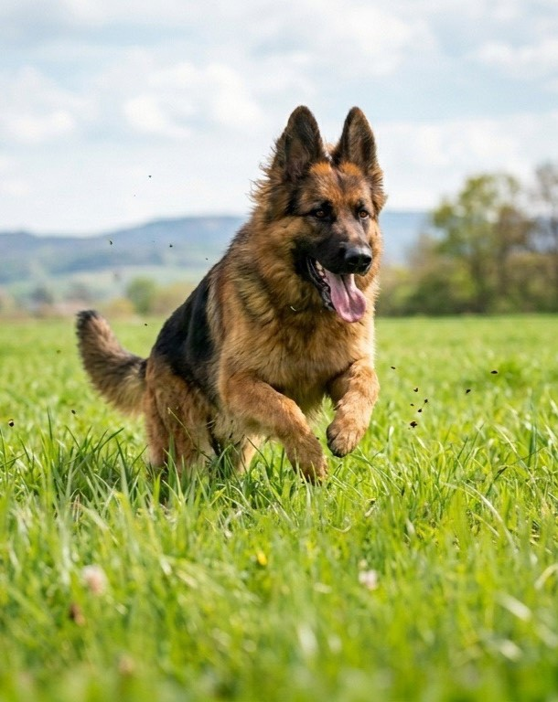

弊社概要
当社は、グループ独自開発の超小型グリーンAI「Sheprd（シェパード）」を核とした、最適化ソリューションの企画・販売を行うテクノロジー企業です。
Sheprdは、記憶データを含めても2GB以内に収まる軽量設計により、電力消費を大幅に抑えることが可能な環境配慮型モデルです。また、完全国産モデルであり、判断根拠を明示する「説明可能AI（XAI）」として、判断プロセスの高い透明性と検証可能性を備えています。
現在、この技術をチップ化するプロジェクトを推進しており、特定の業務モデルからスタートし、将来的には幅広い現場に対応できる汎用型への発展を目指しています。
本技術を基盤として、企業・研究機関・技術パートナーとの共同開発にも柔軟に対応しています。